Day 32｜Cee、海邊小鎮、啤酒蝦的慰藉
2026 年 6 月 21 日 · Santa Mariña → Cee · 32km
第 32 天，天還沒亮就出發，眼前的加利西亞被大霧完全籠罩。今天是一場 32 公里的硬仗。
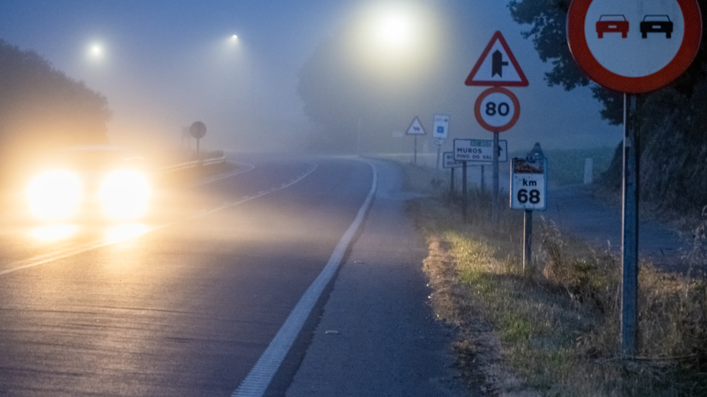
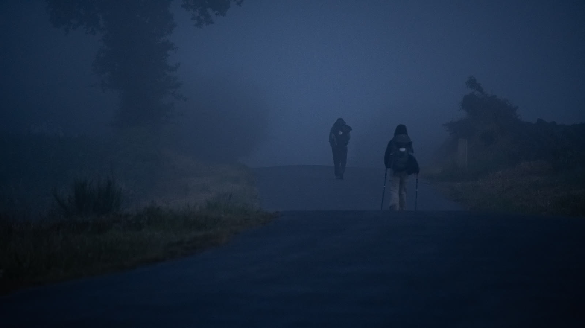
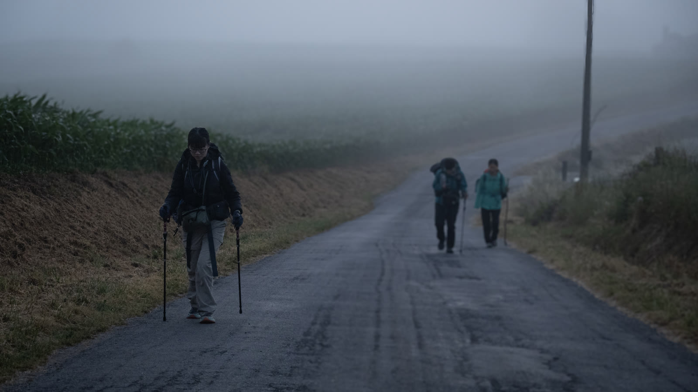
走著走著，太陽漸漸露臉，穿透低空的濃霧，金光瞬間點亮了眼前的一切。霧原上的半輪金日、草坡上迎著日出的旅人、金光霧林裡的獨行——站在小山頭上，地面的視角已經裝不下這份風景，把視角交給天空，穿過雲層，去看看真正的遼闊。
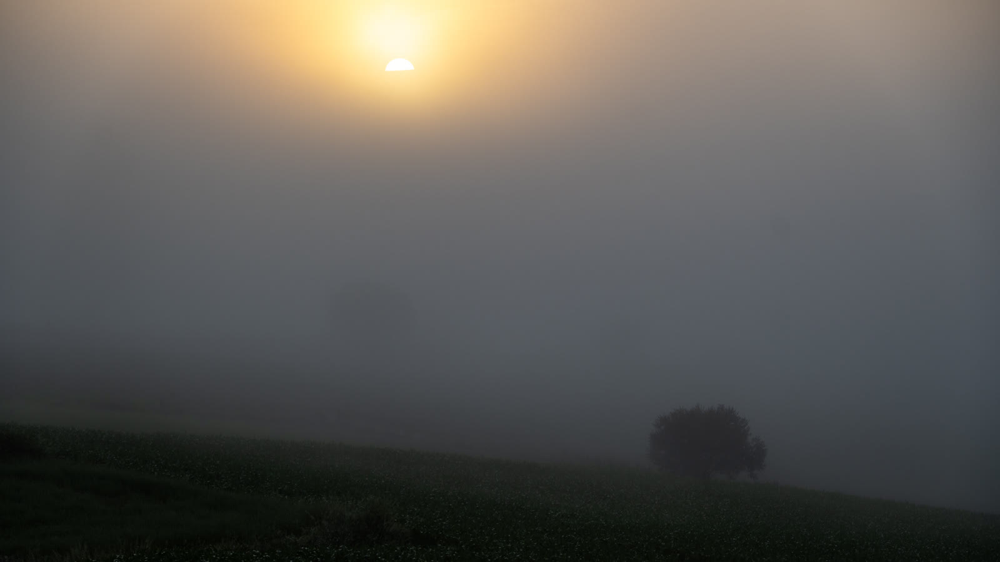
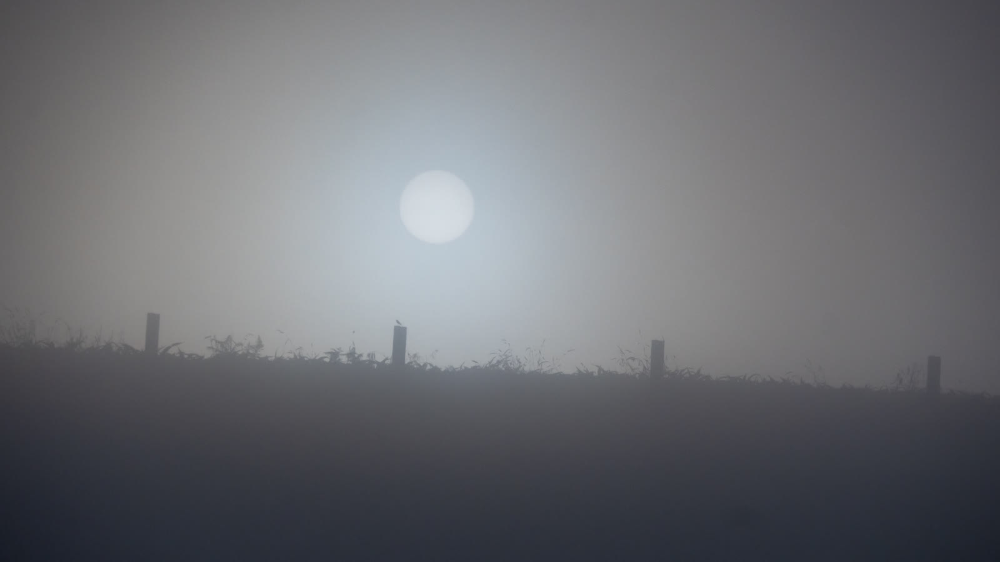
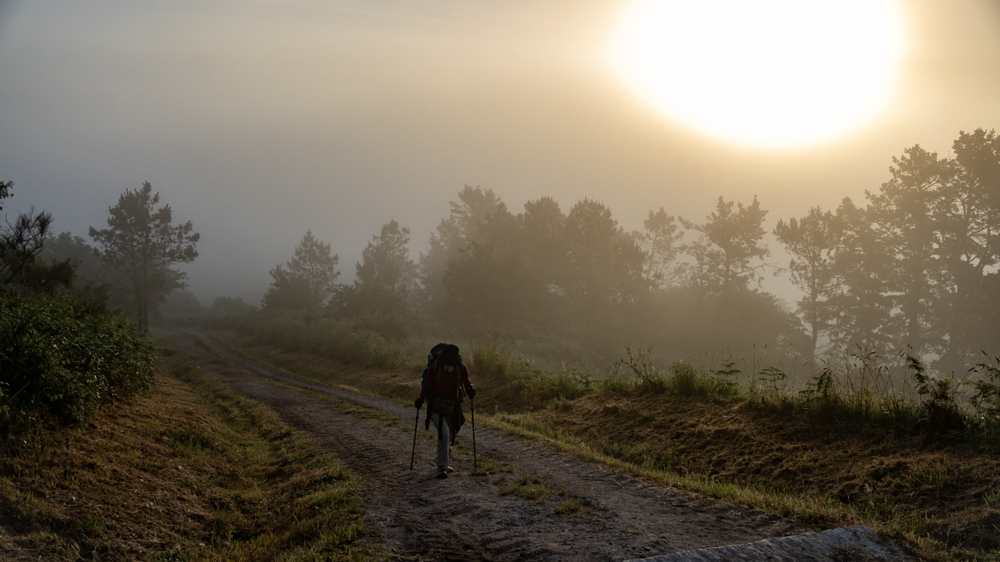
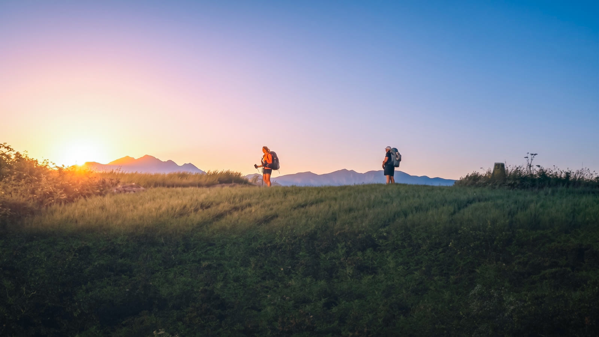
路邊發現一隻落單的鞋子。看著指路石碑，直接用延長竿勾起、穩穩放回石碑上——完全無縫融合，毫無違和感。
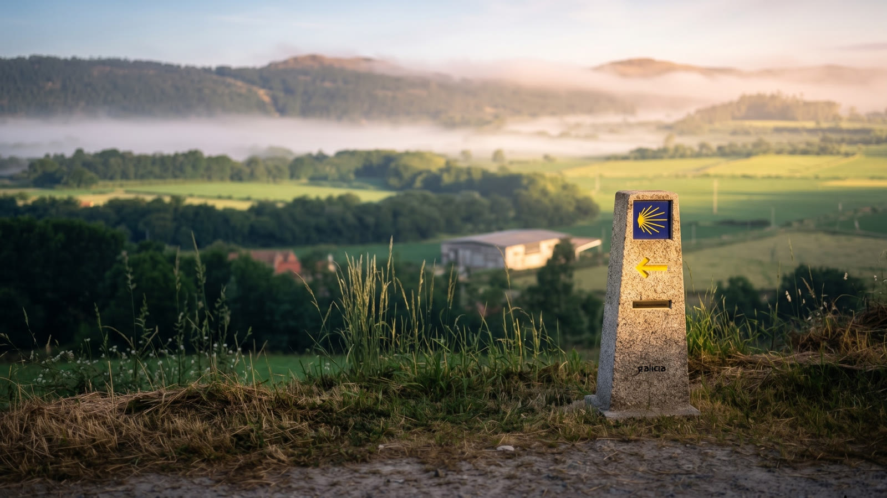
路上認識了兩位外國朋友，一路邊走邊聊。聽說她們知道一條少走冤枉路的小徑，果斷跟著她們的腳步走。至於到底有沒有比較快？看下去就知道。
前往盡頭的路，是一道選擇題：是先去 Muxía，還是 Fisterra？多數人選 Muxía，因為順路，還能少走 3 公里。但我們選擇了較遙遠的 Fisterra。這不只是路線選擇，更是心靈的順序——因為 Fisterra 象徵「死亡」與放下；而 Muxía 象徵洗滌與「重生」。我們刻意繞遠路，是因為我們相信：先去 Fisterra 告別舊的自己，才能在 Muxía 找回新的靈魂。
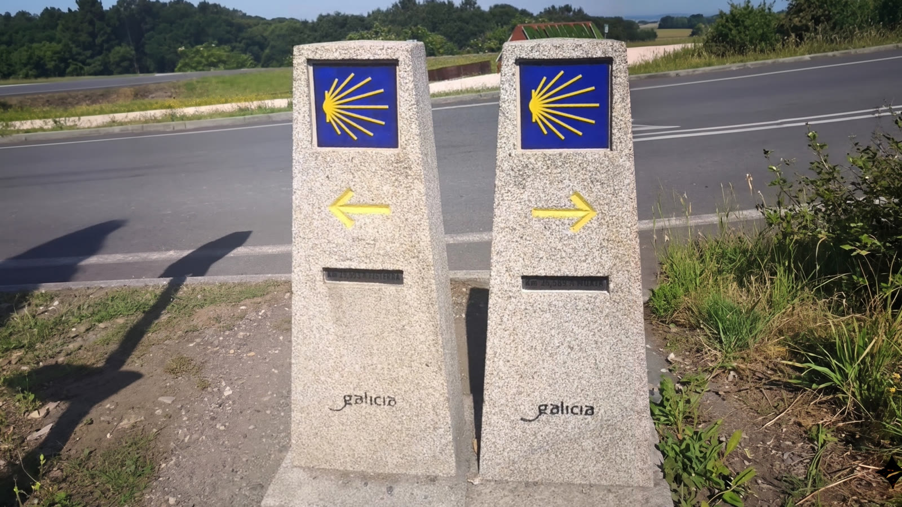
告別山林的狼人雕像，那一抹藍色就這樣毫無防備地出現在眼前。是海！從庇里牛斯山出發，一步一腳印跨越整座半島，今天終於站在這裡看著陸地的邊界。世界盡頭，近在眼前。
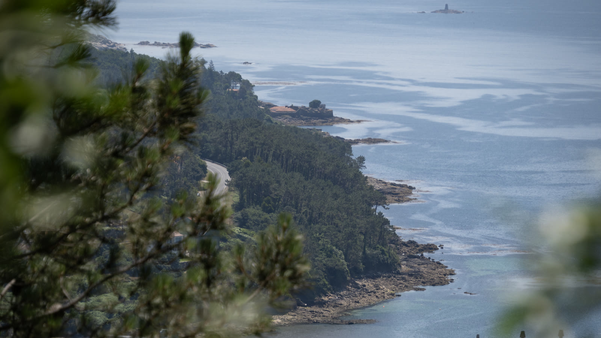
答案揭曉：所謂的捷徑，純屬美麗的誤會。今天實打實踩滿 32 公里。但抵達今晚的庇護所，溫馨的客廳、充滿朝聖者故事的紀念牆、還有牆上的台灣國旗——美得讓人放鬆。
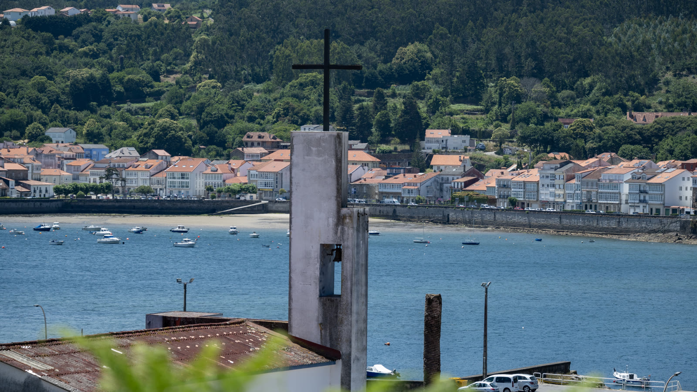
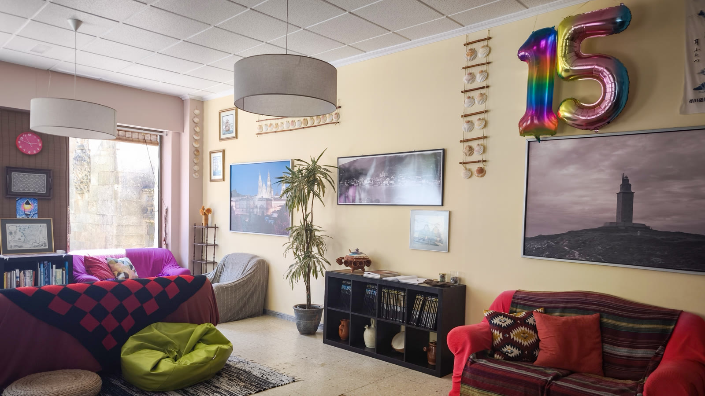
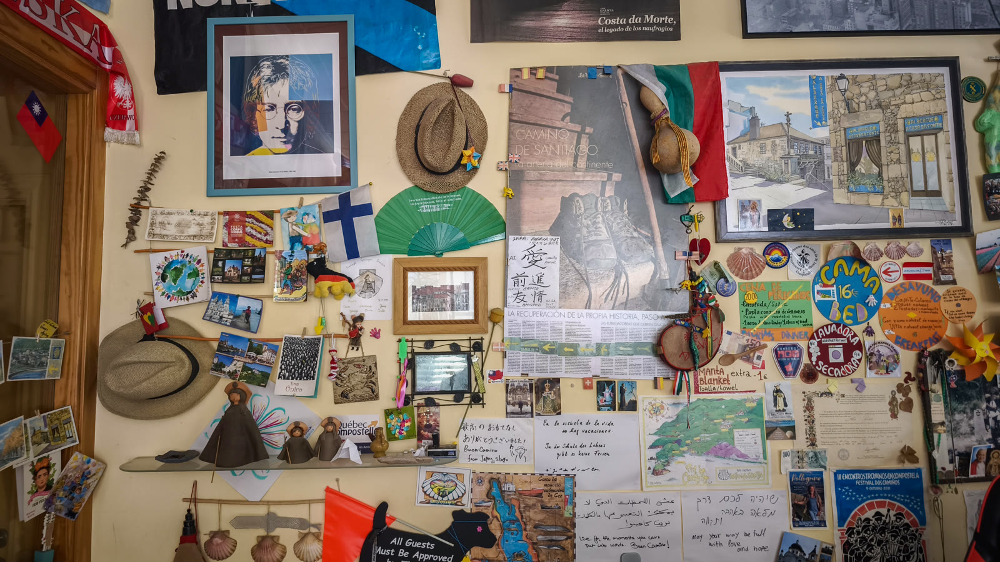
卸下裝備。路過 Cee 廣場的朝聖者地標，套上這雙比臉還大的朝聖鞋，瞬間變得超有喜感。

直奔超市商場。好不容易走到海邊，不衝去超市買幾樣海鮮料理一下，怎麼對得起自己！
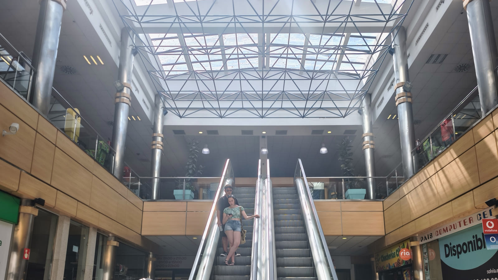
廚房交給我：啤酒鮮蝦、爆炒牛肉、茄汁義大利麵，快速搞定。外國朋友們紛紛投以羨慕眼光，這頓豐盛晚餐實在太過癮了！
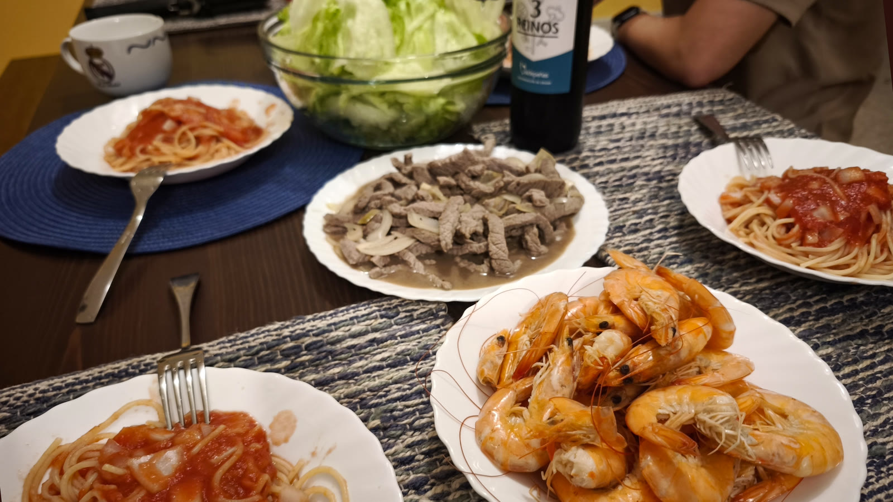
吃飽喝足，漫步來到海邊。夕陽正緩緩沉入山頭，金黃色的餘暉溫柔地撫平了海浪。俯瞰整座寧靜的海灣與點點漁火——Cee 的夜，安靜得剛好。
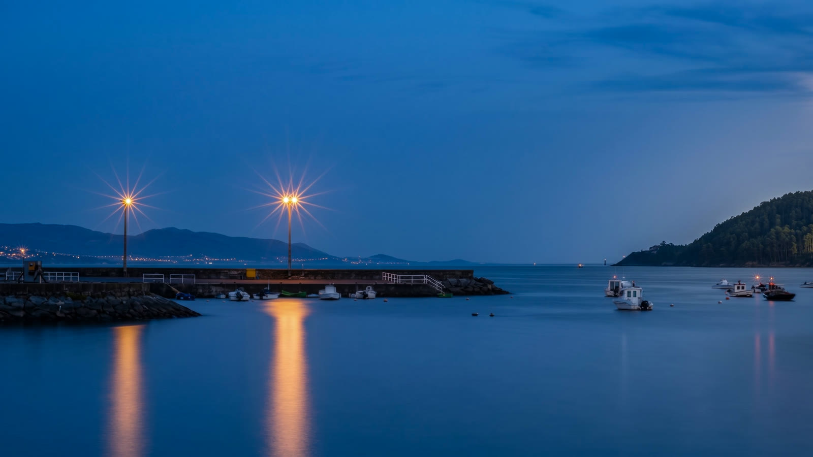
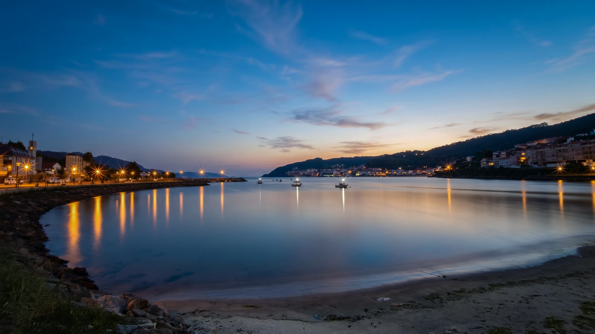
📚 朝聖者小百科：Fisterra 還是 Muxía 先走？
從 Santiago 往世界盡頭有兩條延伸線：Fisterra（菲斯特拉）與 Muxía（穆希亞）。老手都建議——先去 Fisterra，再去 Muxía。Fisterra 象徵「死亡」：在日落中告別舊的自己；Muxía 象徵「重生」：在日出中迎接新的靈魂。順序對了，整趟旅程才完整。
🧭 分岔路口看清楚：Fisterra 較遠但值得，Muxía 順路可省 3km
🍤 靠海就吃海鮮：超市買、庇護所煮，最頂的朝聖者晚餐
| 中餐：Tortilla＋啤酒 | €7.5 |
| 晚餐：漢堡＋桑格麗 | €20.5 |
| 住宿 | €16.0 |
| 合計 | €44.0 |
🎬 對應 Vlog EP8｜比聖地牙哥更震撼！徒步前往世界盡頭Fisterra，0KM石碑與大西洋日落